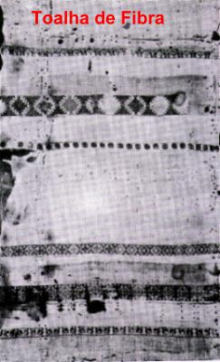
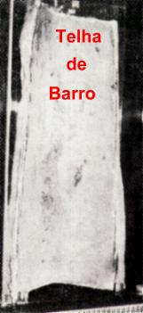
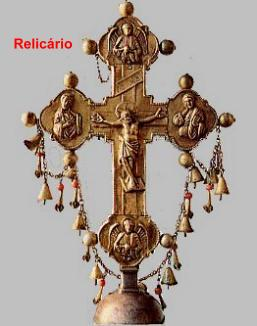
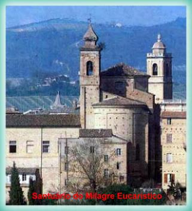
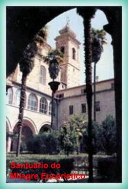

OFFIDA, Italia, año 1273,
Esta Manifestación Sobrenatural
también podría llamarse Milagro Eucarístico de Lanciano II (número dos), porque
aunque se denominó 
Giacomo y Ricciarella eran dos jóvenes recién-casados que vivían en el suburbio de Lanciano, en la zona rural. Pero ellos no vivían en armonía y en una buena comunión amorosa. Al opuesto, ellos revelaban una profunda incompatibilidad de genios, principalmente por el lado de él, que orientaba su atención exclusivamente al trabajo. No se conoce la razón que llevó él a proceder así. Sin embargo, Ricciarella no estaba de acuerdo con esa situación y hacía un dedicado esfuerzo, reaccionando contra una serie de pequeñas y insignificantes ocurrencias domésticas, pero que ganaban la intensidad estimuladas por el malo-humor de su marido, formando barreras que interferían de una manera preponderante en lo vivir cotidiano de la pareja. Giacomo era por demasiado impulsivo y a las veces muy severo con la esposa, al punto de se exaltar y salir para la agresión física.
Ricciarella nunca consideró el vengarse de su esposo por el trato que él le daba. Solo quería una mejor vida con él.
Para lograr esto, buscó los servicios de una hechicera. La bruja tenía gran fama "de que podía hacer volver el fuego a los matrimonios en los que habían terminado el ardor".
La bruja recomendó lo siguiente:
"Reciba la Sagrada Comunión en una Iglesia, pero no tragues la Hostia, llévala a su casa. Póngala en una teja de barro en forma de canal a cocinarla en el fuego. Transfórmela en cenizas y va poniendo periódicamente en la sopa o en el vino de su marido. Después de una semana vuelva aquí para decirme el resultado. La transformación en él será visible y benéfica.
La descripción hecha por la bruja de como su marido se sentiría bajo los efectos de la brujería, le dieron el impulso y la coraje que faltaban, dejándole animada y hasta impaciente, con prisa de ejecutar el trabajo.
Ricciarella, como sus padres y hermanos, fue creada en la fe católica y ella sabía que su acto era un gran pecado, un sacrilegio terrible. Entonces, no es difícil de imaginar el cuánto ella luchó contra su conciencia que lo indicaba el camino del derecho y de la razón, antes de tomar la decisión de hacer aquél acto abominable. Pero ella repetía en su mente para mantener su coraje:
"Es necesario que yo haga eso para convertir mi marido...
Y así, por su decisión entró en la Iglesia. La Santa Misa ya había empezado. En el momento de la Comunión fue recibir JESÚS, acompañando a todos los fieles que estaban propiamente preparados y que se acercaban de la balaustrada de madera que separaba el Altar del pueblo. Así que el sacerdote puso la Sagrada Hostia en su lengua, vino rápidamente para la entrada de la Iglesia y sin nadie haber notado, él guardó el Sagrado Sacramento.
No esperó el término de la
ceremonia. Inmediatamente salio y corrió por las calles de Lanciano a su casa.
Sus manos temblaban 

Por la noche, cuando su marido regresó del trabajo y dejó la mula prójima del establo, observó que el animal estaba agitado y él no quiso quedarse allí y también, la mula no quiso entrar en el establo, como era su hábito. Giacomo cansado, ansioso por descansar, viendo una conducta excéntrica del animal, tentó empujarlo para dentro del establo de cualquier manera y además de aplicarle algunas chicoteadas. Delante de la violencia, el animal se dejó caer con las rodillas y el pecho en la tierra y se quedó así, inmóvil en su lugar favorito, casi en una posición de adoración. Giacomo asustado notó que algo había se pasado, porque observó, que la tierra había sido excavada recientemente. Él entró en casa y de pronto ofendió Ricciarella por la conducta extraña del animal y dice que ella era la culpada, que había hecho alguna hechicería y había enterrado en el establo. Y extravasando su cólera, castigó la esposa con algunos golpes de azote, que aún mantenía en sus manos.
Desde aquél momento, para ella, la vida se tornó un verdadero infierno. Además de sentir una gran angustia por estar con la conciencia pesada por motivo de su gran pecado, sentía que la falta de paciencia y los maltratos de su marido aumentaron de una manera insoportable.
Así se pasaron siete años de un tiempo difícil y doloroso para ella, porque tenía que esconder su secreto, sus angustias y sus sufrimientos, llevando viva en su corazón la maldita memoria de un error que torturaba el alma e ya estaba dejándola en punto de enloquecer. Con la conciencia desajustada, empezó a imaginar que aquellos maltratos que recibía de Giacomo eran parte del castigo que el DIOS le enviaba. Pensando de este modo, perdió todas las esperanzas de convertirlo.
Por otro lado, ella guardaba una inmensa tristeza por el crimen imperdonable que hizo contra JESÚS. ¡Luego contra ÉL que nunca le había hecho cualquier mal! ¡Al opuesto, el SEÑOR ya había le ayudado en varias situaciones difíciles de la vida! Por esa razón, se avergonzó con su procedimiento, lloraba y sentía una profunda angustia, porque pensaba en reparar el mal que hizo, pero no tenía coraje. Ella querría acercarse de un sacerdote para confesar su pecado y librarse de aquella monstruosa culpa, pero imaginaba cosas terribles, como por ejemplo, una reacción violenta del sacerdote, excomulgándole por el absurdo pecado. Y así pasaban los días y ella no sabía lo que hacer.
Sin embargo, cuando no más suportó vivir con el castigo impuesto por ella misma durante siete largos años, Ricciarella entró en contacto con el Sacerdote Diotallevi que pertenecía al Orden de Santo Agustino y él era el sacerdote de la Parroquia en Lanciano. Arrepentida y con la cara bañada en lágrimas, ella confesó sus pecados... EL sacerdote sorprendido y pasmo, la oyó en silencio, dejando que ella vaciase su corazón. A seguir, ellos fueron a casa de ella sin nadie tener notado. Entraron en el establo y excavaron en el lugar. Cuando el Sacerdote encontró la toalla y descubrió lo tejido, él vio admirado que la Carne que sangró y la parte central de la Hostia se quedaron incorruptas y perfectas a través de los años, y así, eran en la verdad el Cuerpo y la Sangre del SEÑOR. Entonces, respetuosamente cogió la toalla manchada de Sangre y la teja de barro que contenía la Carne, la Sangre y el centro de la Hostia Consagrada y los llevó para el Convento Agustino en Offida, una ciudad prójima.


Después, para justificar su procedimiento, el sacerdote Diotallevi dijo que actuó así por dos razones: primero, él pensaba en la seguridad del Milagro, porque tuvo miedo que los malhechores apareciesen o que algún fanático quisiese destruirlo por algún inconfesable motivo; secundo, porque él mismo residía en el Convento en Offida. En la continuidad de los días, llevó el hecho al conocimiento del sacerdote Miguel Mallicani que era el Superior General de la Orden de San Agustín. Delante de aquellas novedades quedó vivamente interesado en el asunto y no permitió que el Milagro fuese para otro local. En obediencia la orden de su superior jerárquico, quedó de acuerdo en que el Milagro permaneciese definitivamente en Offida.
Él sacerdote Mallicani ordenó preparar una Capilla especial en el Santuario de Santo Agustín que se tornó conocido como el Santuario del Milagro Eucarístico. El Milagro se encuentra dentro de un rico y precioso Relicario en forma de Cruz, hecho en Venecia, y sólo puede ser adorado por los fieles en el 3 de octubre, fecha en que el evento es celebrado. Sin embargo, "la Teja de Barro" y "la Toalla de Fibra con manchas de la Sangre del SEÑOR", se encuentran disponibles en el Santuario a la visita pública en una Capilla especial.

"NAJU, Corea del Sur, 1985 a 1999"
Entre las decenas de Manifestaciones Sobrenaturales Eucarísticas que se pasaron en varios países, tenemos que abrir un grande espacio a los eventos en NAJU, porque sin duda ellos fueran espectaculares, sensacionales y impresionantes en todos los aspectos, además de Misteriosos y Reveladores, mostrando, sobre todo, el celo y la Voluntad del CREADOR en probar la Verdad Cristiana. Nosotros podemos afirmar que el SEÑOR DÍOS excedió en bondad, superando a todos los límites posibles e imaginables de generosidad, realizando paternalmente maravillas extraordinarias e inolvidables, para que el mundo entero viese, entendiese la grandeza y la prontitud del Amor Divino, y decidiese en retribuirlo, buscando la conversión del corazón.
Por esa razón, reverenciando la encantadora bondad Divina, nosotros decidimos divulgar con el más grande énfasis esas Manifestaciones del SEÑOR y por eso, construimos un Sitio dedicado a los eventos admirables en NAJU.
El Sitio se lhama: "NUESTRA SEÑORA DE NAJU"(Milagros Eucarísticos)
Y puede encontrarse en la dirección siguiente:
http://www.angelfire.com/nv/sacred/index13.html
O, en las direcciones del PORTAL DEL APOSTOLADO:
http://www.apostoladosagradoscoracoes.com/
http://www.angelfire.com/sc3/ministro/index.htmlhttp://apostled.tripod.com/index.html
http://jusan.tripod.com/index.html
Adelantando algunas noticias sobre el Sitio, podemos decir que el describe con clareza y pone en prominencia una apreciable cantidad de imágenes, que testifican de una manera incuestionable los fenómenos sobrenaturales, y más:
a) En diferentes ocasiones, por más de veinte (20) veces, Julia Kim al recibir la Sagrada Comunión en la lengua, durante la Santa Misa, la Hostia Consagrada se convierte visiblemente en Cuerpo y Sangre del SEÑOR en la presencia de las personas abismadas y admiradas con el Milagro notable. Repletos de emoción, muchos lloran debido a la realidad de ver la carne viva del propio DIOS, bien delante de sus ojos. Los sacerdotes y las personas que vieron el evento milagroso bien prójimo, testificaron el notable fenómeno con fervor y entusiasmo.
b) Del Crucifijo de JESUS que se encuentra en la pared de la Capilla, encima del Altar donde está la imagen de Nuestra Señora, por dos veces Julia vio la imagen del SEÑOR ganar vida, y de las heridas principales fluir la Sangre Divina, que de pronto se convirtió en Hostias blancas y puras, y cayeron graciosamente en los pies de la imagen de la MADRE DE DIOS, delante las personas admiradas que henchían la Capilla. Todos pudieron observar cuando allí aparecieron de súbito las siete Hostias que vinieron de las heridas de las dos manos, de las heridas de los pies, de la cabeza donde estaba la Corona de Espinas, del lado donde el centurión romano clavó la lanza y de la herida del Corazón de JESUS.
c) Julia escogiendo el agua en una naciente atrás de la Capilla apareció en el fondo del recipiente la imagen de una Hostia grande.
d) En el tejado de la Capilla en octubre de 1988 la luz solar formó la imagen de una Hostia grande encima de un Cáliz.
Este pequeño texto tiene la intención de ser una invitación para que usted visite nuestro Sitio "NUESTRA SEÑORA DE NAJU" (Milagros Eucarísticos)y así, pueda recibir el beneficio de la gracia incomparable de conocer esta impresionante manifestación del CREADOR.